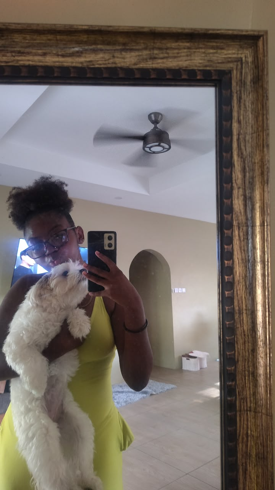
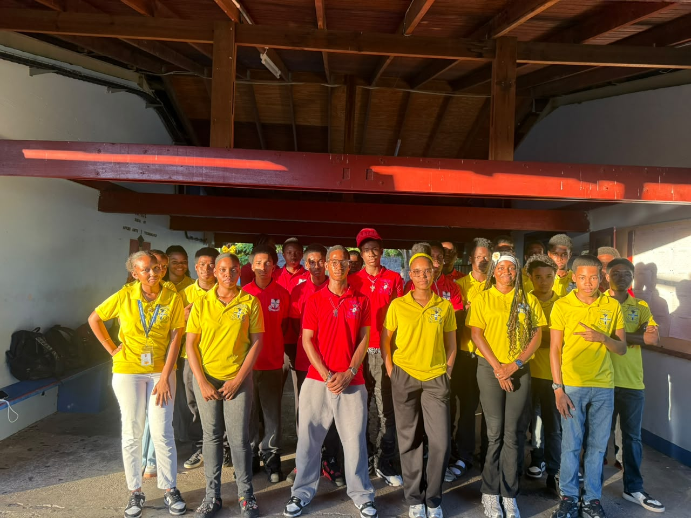
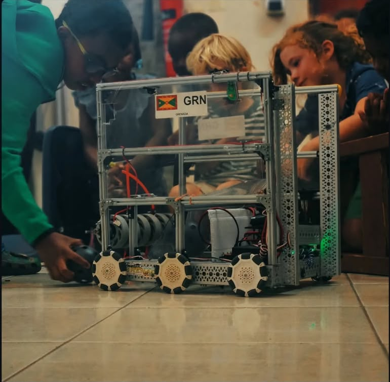
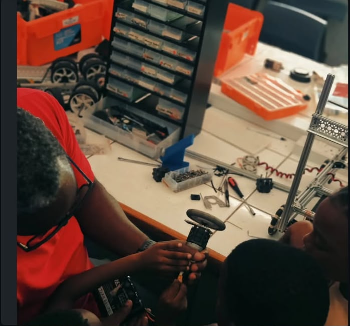
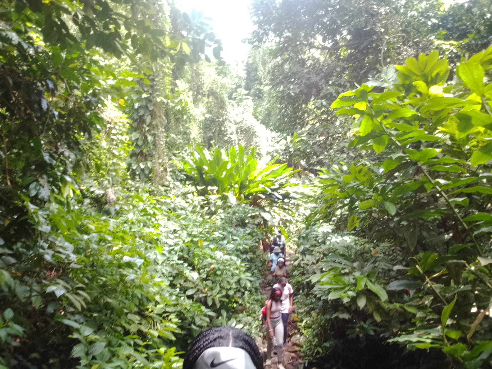
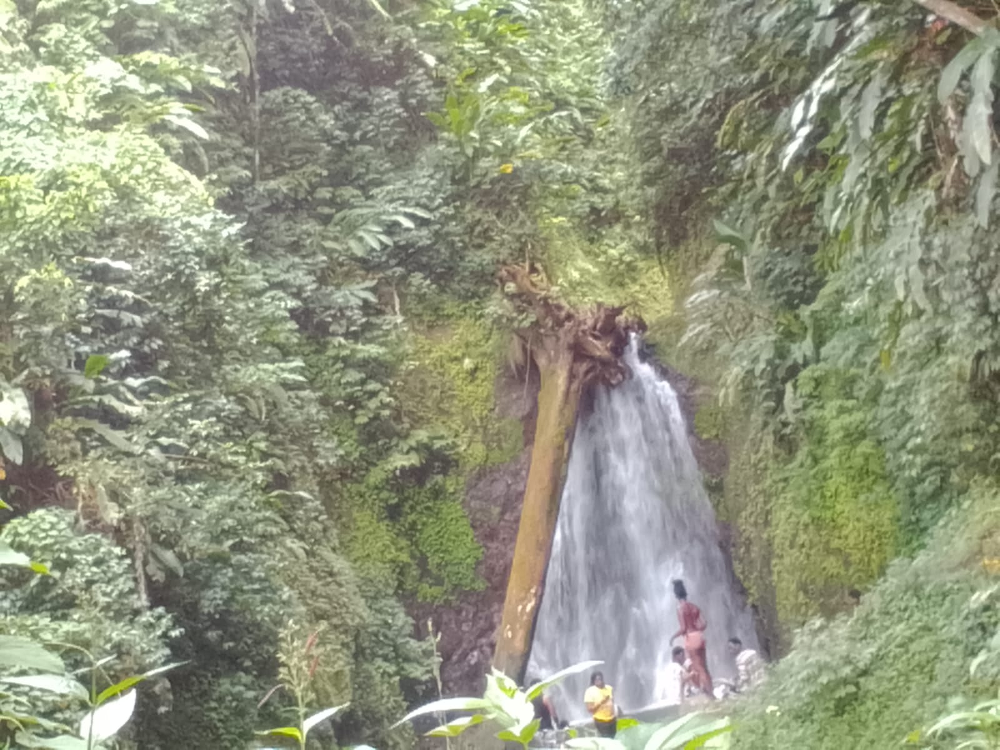

WELCOME TO MY WEBSITE
Welcome to my personal website! Here you can learn more about me, my interests and the activities I enjoy outside of the classroom.
Get to Know Me
Hi! My name is Aaliyah and I am a student who enjoys learning new things and trying different activities. I went to SJCSG and I enjoy spending time with my friends, being involved in Robotics Club and going hiking. I also have a lot of animals and I really enjoy spending time with them. My favorite colors are pink and green because I love how they look together. I love chocolate and gummies, and my favorite foods are fries and Subway. When I'm relaxing, I enjoy listening to music, especially Mariah the Scientist and Frank Ocean. I also enjoy making memories, trying new things, and spending time with the people and animals I care about. I created this website to share a little about myself, my interests and some of the things I enjoy.
Being involved in Robotics Club gives me the opportunity to learn about technology, meet and develop friendships with people I wouldn't know otherwise, and solve problems creatively. I enjoy being part of a team and learning how different technologies work.
I enjoy hiking because it gives me the chance to spend time outdoors and explore different places. Hiking is also a great way to relax, enjoy nature, and experience something new.
Robotics and hiking are two activities that I enjoy. They allow me to develop different skills while experiencing new things.
Robotics is one of my favorite activities because it allows me to combine technology, creativity, teamwork, and problem-solving. Being involved in Robotics Club gives me opportunities to learn and work together with other students.



Hiking allows me to explore nature, discover new places, and enjoy spending time outdoors. I like being able to experience different environments and take a break from everyday routines.


| Activity | Skills Developed | Why I Enjoy It |
|---|---|---|
| Robotics Club | Teamwork, Technology, Problem Solving | Learning and creating new things |
| Hiking | Exploration, Patience, Outdoor Skills | Exploring nature and new places |
| Technology | Computer Skills, Creativity | Learning how technology works |
Thank you for visiting my website! If you would like to get in touch with me, use the information below.
Email: liyahale@gmail.com
Phone: 555-0147